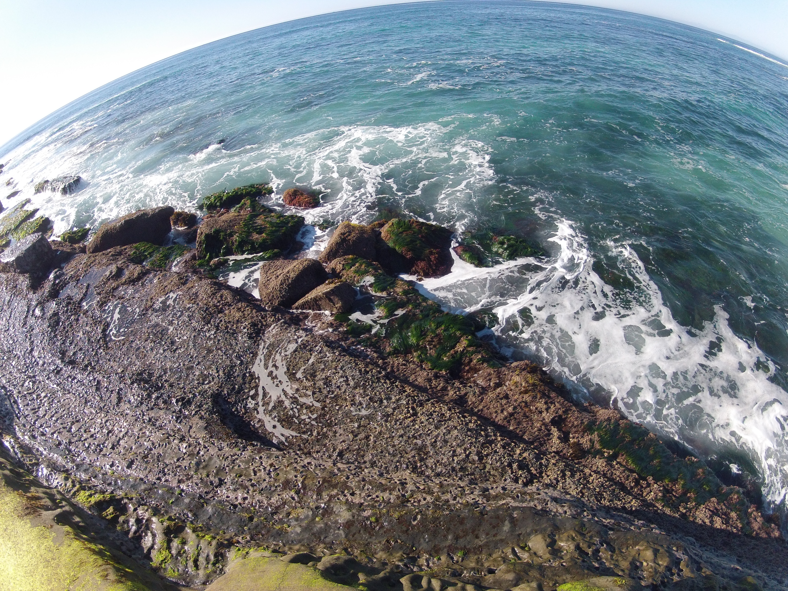
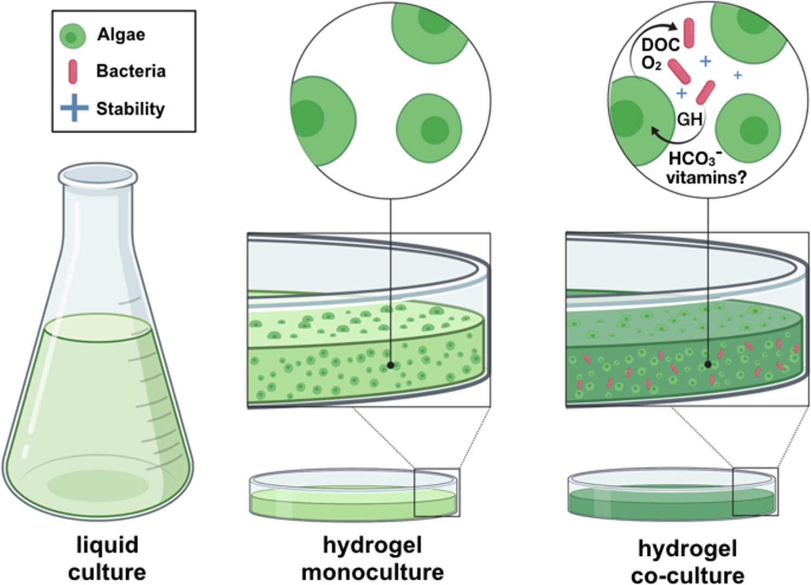

What is the genomic architecture that supports osmoregulatory plasticity in euryhaline killifish?

Welcome to Tatum Bernat's Laboratory! Navigate using the menu on the left to learn more about Tatum and her research.
What is the genomic architecture that supports osmoregulatory plasticity in euryhaline killifish?

What is the impact of wildfire ash on Chinook salmon?

Does co-culturing microalgae with bacteria within a hydrogel improve microalgae yield and performance?
Sed varius enim lorem ullamcorper dolore aliquam aenean ornare velit lacus, ac varius enim lorem ullamcorper dolore. Proin sed aliquam facilisis ante interdum. Sed nulla amet lorem feugiat tempus aliquam.